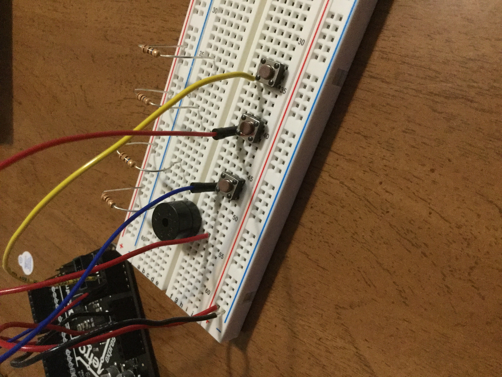
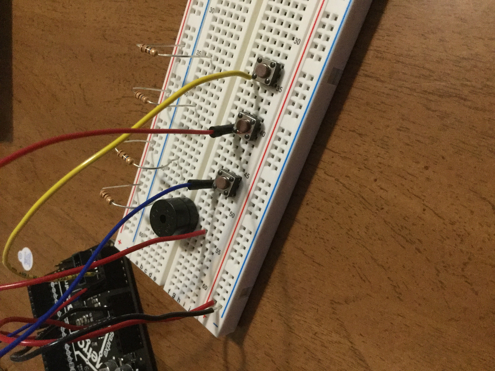

Week 1: Introduction
Microcontroler that produce an output
Here is a picture of a mini robot that I hope to recreate for my project

Microcontroler that produce an output
Here is a picture of a mini robot that I hope to recreate for my project